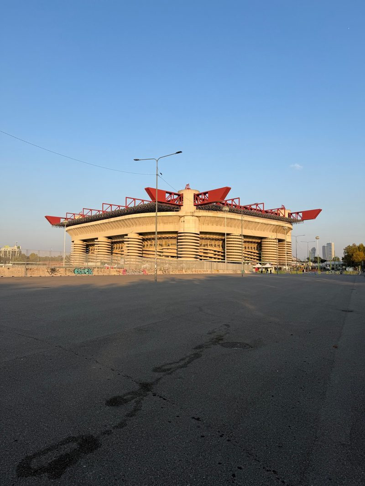
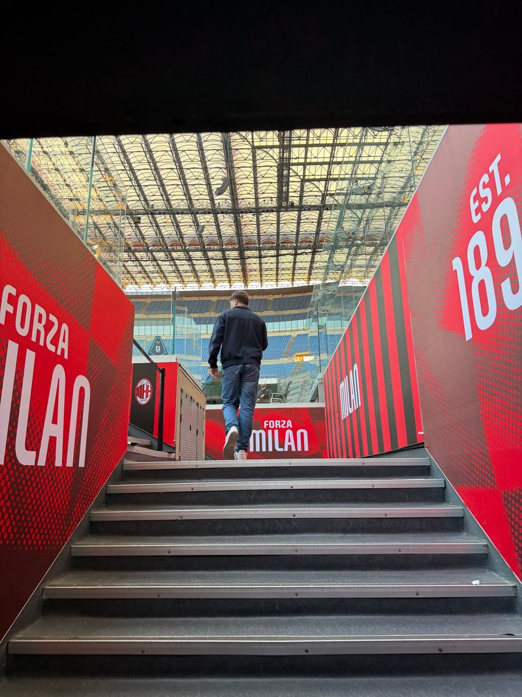
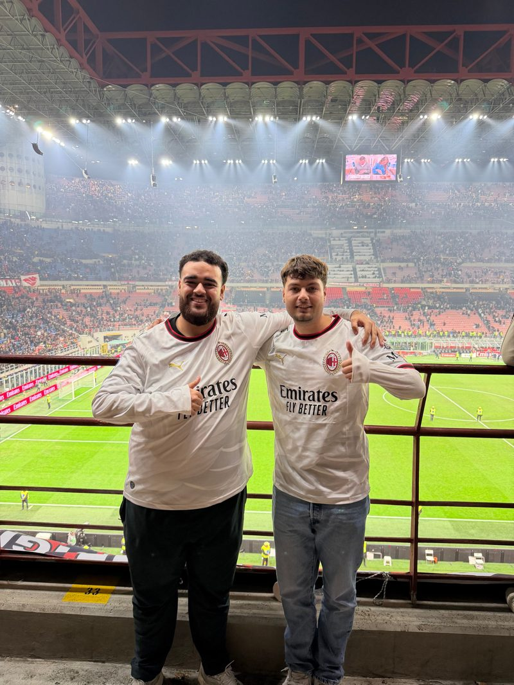
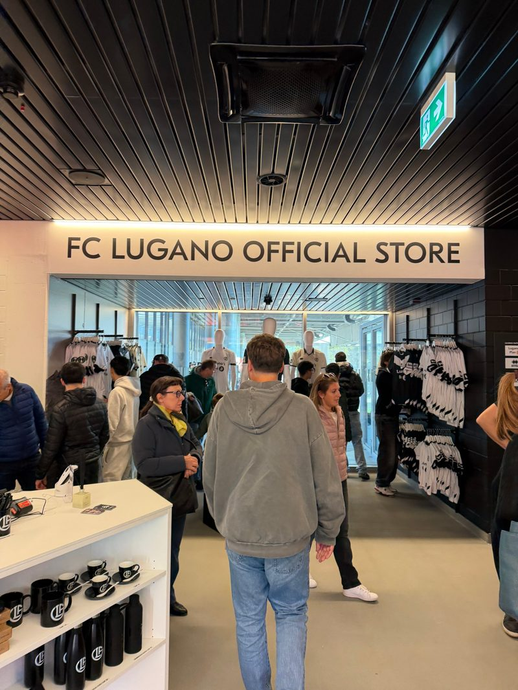
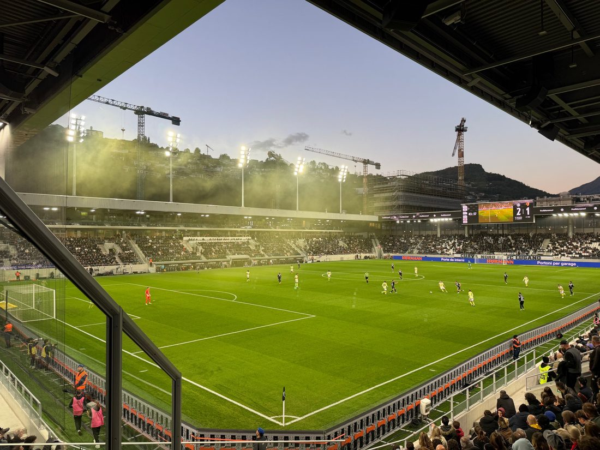

Op basis van een business development-vraagstuk een vernieuwend businessidee met verdienmodel ontwikkelen, met oog voor technologische innovatie, meervoudige waardecreatie en ethisch handelen.
Bewijs volgt in sprint 2 en 3.
Wassim El Mesbahi, Commerciële Economie, HvA
Dit portfolio laat mijn ontwikkeling zien als Fanbase Business Developer. Voor de KNHB onderzoeken we hoe HOCKEY5s jongeren van 16 tot 24 jaar langer aan hockey kan binden en hoe de bond daar een duurzaam verdienmodel van kan maken. Ik kijk daarbij ook vanuit mijn eigen ervaring als voetbalfan.
Deze foto is gemaakt toen ik mijn propedeuse van het eerste jaar ophaalde. Ik koos hem omdat het een mooi moment was en hij de afsluiting van mijn eerste jaar laat zien.
Alle vier de leeruitkomsten toon ik aan het eind aan. Per fase zie je waarmee ik dat doe en wat al af is. Bijgewerkt op 10 november 2026.
Twee doelen, allebei volgens dezelfde route: kennis ophalen, uitproberen, bewijs verzamelen, evalueren.
Skillkaart Fanbase BD2: breng je informatie overtuigend over. Ik moet stakeholders enthousiast maken voor ons fanbase-concept door te laten zien hoe het bijdraagt aan fanbeleving, loyaliteit en waarde. Daarvoor moet ik kunnen laten zien waar mijn uitspraken op gebaseerd zijn: een ervaring, een bron of eigen onderzoek.
Wanneer heb ik het gehaald? Als de feedback op mijn tussentijdse portfolio en in het assessment niet meer vraagt om ontbrekende onderbouwing, terwijl dat in blok 1 vier keer zo was. En als ik in het assessment elke waarom-vraag kan beantwoorden met een voorbeeld of een bron.
Ik maak dit doel bewust niet meetbaar met aantallen activiteiten, zoals vijf podcasts luisteren. Dat laat alleen zien dat ik iets heb gedaan, niet dat ik beter onderbouw. Daarom vergelijk ik de feedback aan het eind van dit blok met de feedback van blok 1.
Ik wil later zaakwaarnemer worden. Daarvoor moet ik commerciële gesprekken kunnen voeren met sportorganisaties en een deal onderbouwen met wat beide partijen eraan hebben. Mijn eerste idee voor dit semester: een waardepropositie leren pitchen en onderhandelen met een sportpartij, en een eerste stap zetten in mijn netwerk richting stage of minor.
Dit doel werk ik verder uit met de zelfsturingsopdracht.
Per leeruitkomst: de opdracht, de status, de feedback, wat ik aanpaste en wat mijn eigen aandeel was. Bewijs staat direct eronder.
Op basis van een business development-vraagstuk een vernieuwend businessidee met verdienmodel ontwikkelen, met oog voor technologische innovatie, meervoudige waardecreatie en ethisch handelen.
Bewijs volgt in sprint 2 en 3.
Op basis van kwalitatief onderzoek relevante inzichten vertalen naar businesskansen voor een nieuw of verbeterd businessconcept.
Bewijs volgt in sprint 1.
Design Thinking toepassen om de kwaliteit van de oplossing te verhogen.
Bewijs volgt vanaf sprint 1.
Fanbase Business Developer: specifieke fanwaarden van sportdoelgroepen identificeren om tot een duurzaam verdienmodel in de sport te komen.
| Opdracht | Status | Feedback | Aangepast of geleerd | Mijn aandeel |
|---|---|---|---|---|
| Wie ben jij als fan? | Concept klaar | Volgt | Uit mijn voetbaltrip blijkt dat ik vooral betaal voor de beleving: het stadion, de stad en de sfeer. Ik bezoek ook clubs waar ik geen fan van ben en neem van elke club een shirt mee als herinnering. Samen gaan is voor mij de belangrijkste drijfveer (erbij horen, Denton, 2015). Volgens de fanquiz ben ik een fanatieke fan, maar mijn betrokkenheid speelt zich vooral buiten het internet af; aan online wedstrijden voor fans doe ik niet mee. Bij de derby kregen leden en seizoenkaarthouders voorrang bij de kaartverkoop. De KNHB heeft geen lidmaatschap voor fans, dus voorrang op schaarse momenten kan een reden zijn om lid te worden. Of jongeren van 16 tot 24 jaar daarvoor willen betalen, onderzoek ik in sprint 1. | Individueel. Mijn voetbaltrip naar Milaan en Lugano (30 okt–2 nov 2026, € 447 aan kaartjes, tour en shirt) als bron, gekoppeld aan de kennisbites Customer journey als businesstool en Fanbase marketeer (Denton). |





Per skill kort waar ik het liet zien, gekoppeld aan een opdracht en bewijs.
Faninzichten gebruiken als inspiratie voor vernieuwing.
Volgt bij de brainstorm in sprint 2.
Op de eerste lesdag nam ik de klassenapp over en voegde ik de nieuwe studenten toe. Een teamgenoot zat nog in Zuid-Afrika; ik mailde hem om zijn nummer, zodat hij vanaf dag 1 in onze groepsapp kan meelezen.
Zie mijn leerdoel hierboven.
Bij de touchpoint Wie ben jij als fan onderzocht ik eerst mijn eigen fangedrag, als start van de inlevingsfase van Design Thinking. Daardoor kan ik in de interviews straks beter zien waarin jongeren van 16 tot 24 jaar anders zijn dan ik.
Schrijf ik aan het eind van het blok.
Na de kick-off merkte ik dat de docenten hoge verwachtingen van mij hebben. Mijn vraag voor dit blok is of ik constant kan presteren als de druk oploopt. Aan het eind van het blok kijk ik terug of dat is gelukt.
Hier komen mijn betekenisvolle terugblik (What, So what, Now what) en mijn conclusie over de beroepsrol en richting niveau 3.
Wat ik per week deed en welke feedback ik kreeg. Nieuwste bovenaan.
| Datum | Wat ik deed of leerde | Koppeling |
|---|---|---|
| 10 nov | Touchpoint Wie ben jij als fan uitgewerkt: mijn voetbaltrip naar Milaan en Lugano als klantreis, gekoppeld aan de kennisbites Customer journey en Fanbase marketeer. Uitslag fanquiz: fanatieke fan, vooral buiten het internet betrokken. | LU4, zelfsturing |
| 10 nov | Kick-off KNHB met Kees Broese van Groenou en Boukje Smeets. De KNHB heeft geen lidmaatschap voor fans; fans geven nu vooral geld uit aan merchandise, de fandag en evenementen. Behoud van 16- tot 24-jarigen is een doel (+2,5%). | LU2, LU4 |
| 9 nov | Klassenapp overgenomen, nieuwe studenten toegevoegd en teamgenoot in Zuid-Afrika gemaild voor zijn nummer. | Samenwerken |
| 9 nov | Kennisbites Design thinking (GoodHabitz, eindtoets 25/25), Customer journey als businesstool (quiz 100%) en De business development-strategie (Edumundo). | LU1, LU3 |
| Datum | Van wie en waarop | Feedback | Wat ik ermee doe | Status |
|---|---|---|---|---|
| 28 okt | Gregory van Hout, eindbeoordeling blok 1 (8) | Het portfolio was verzorgd en persoonlijk. Greg vroeg wel door: waarom ben ik trots om Marokkaan te zijn, wat heb ik geleerd van Mino's Imperium en wat deed de agressietraining met mij? Ook schreef ik in de we-vorm. | Ik heb dit punt als CE-skilldoel voor blok 2 gekozen en gebruik deze feedback als nulmeting. | Loopt |